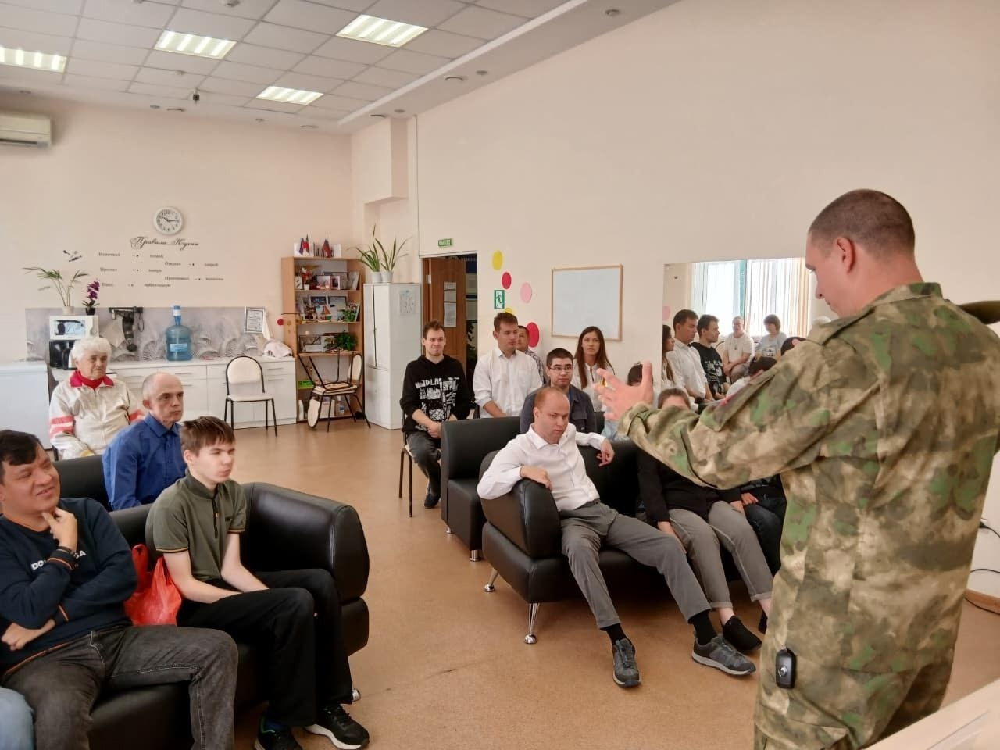
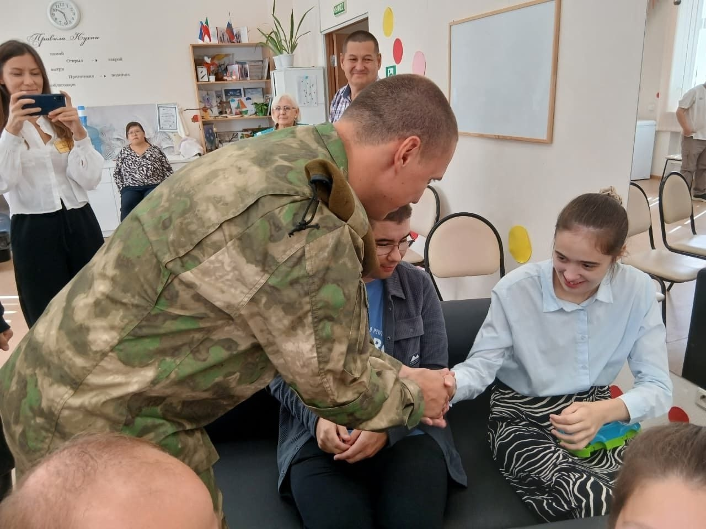
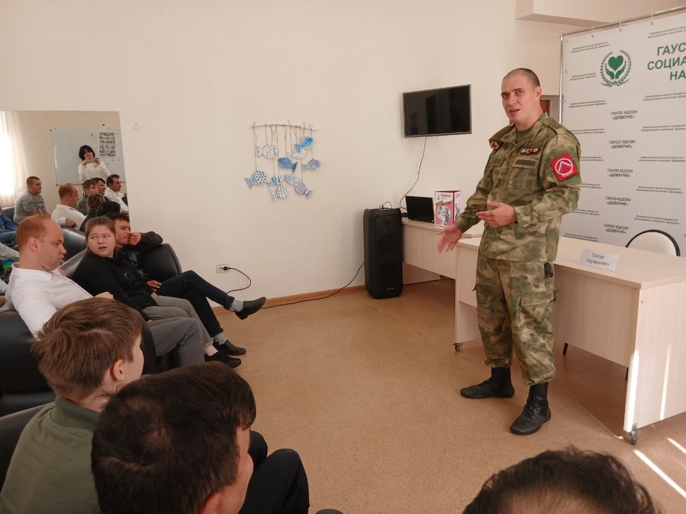
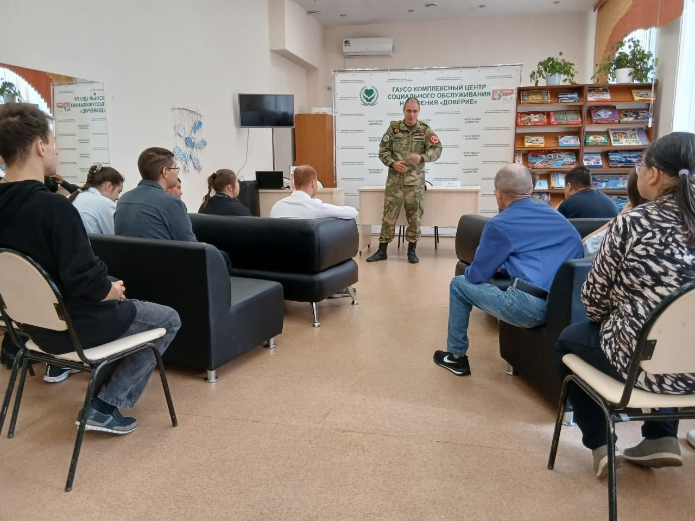
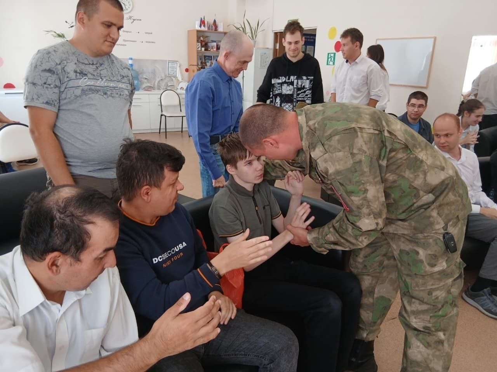
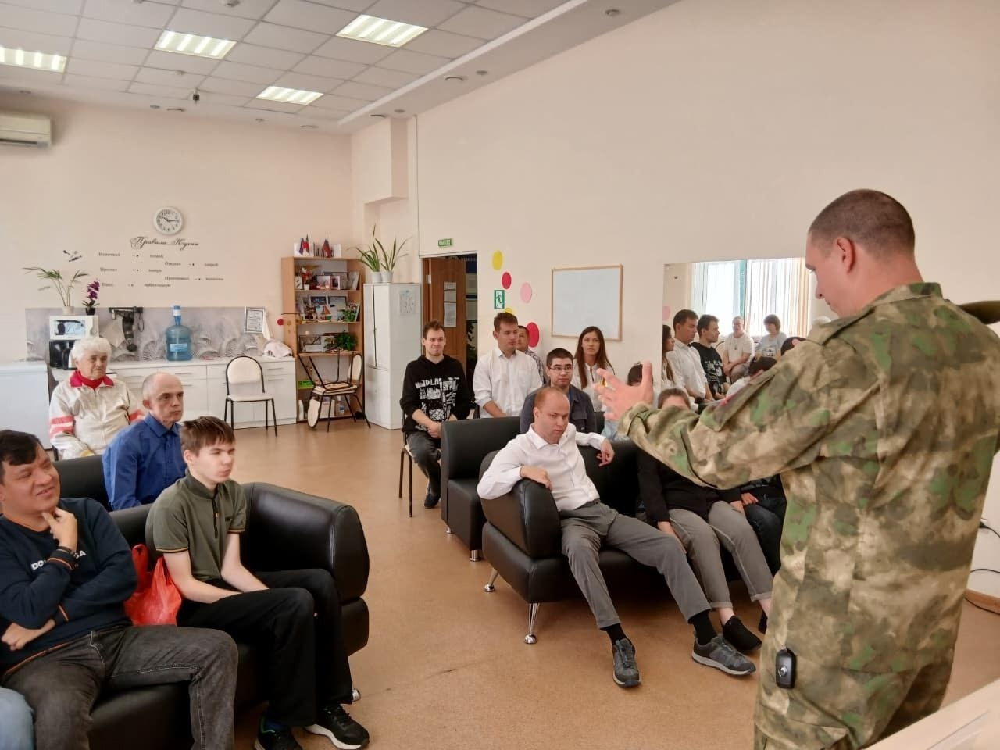
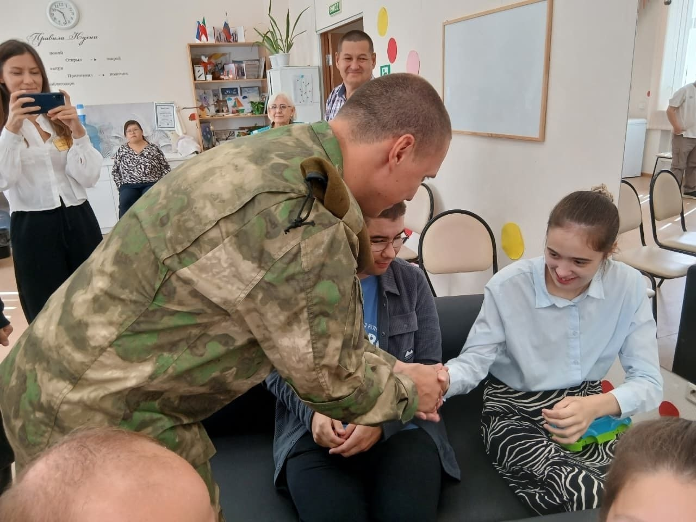
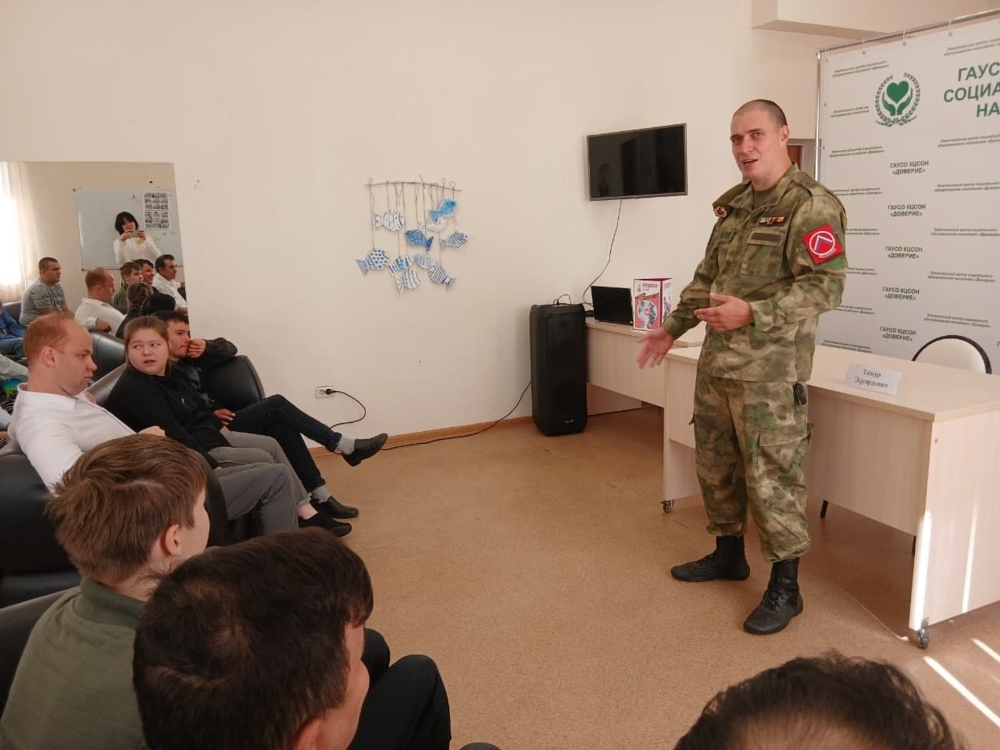
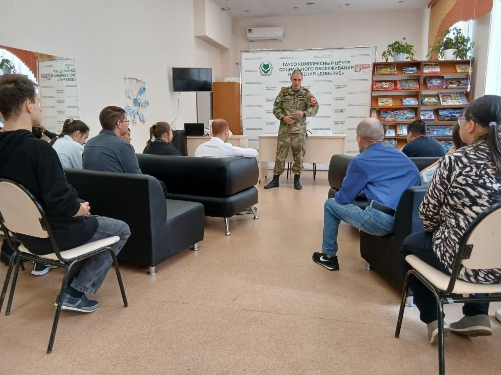
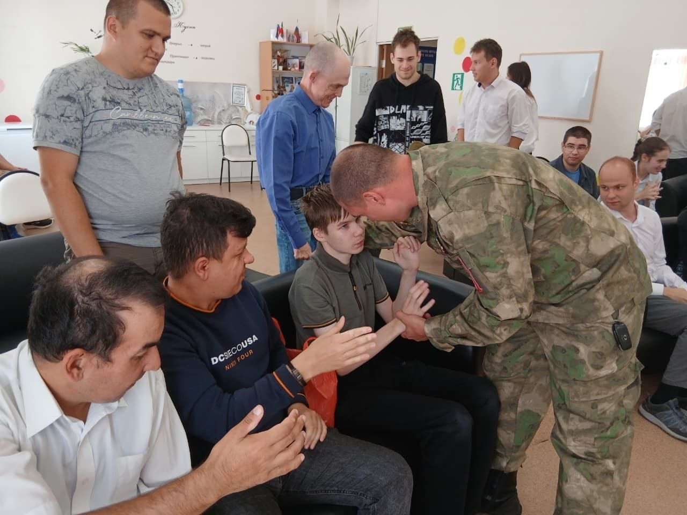
 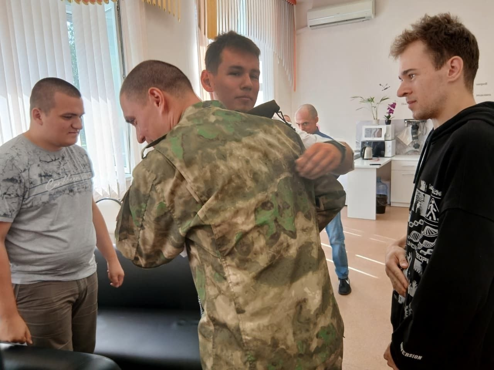
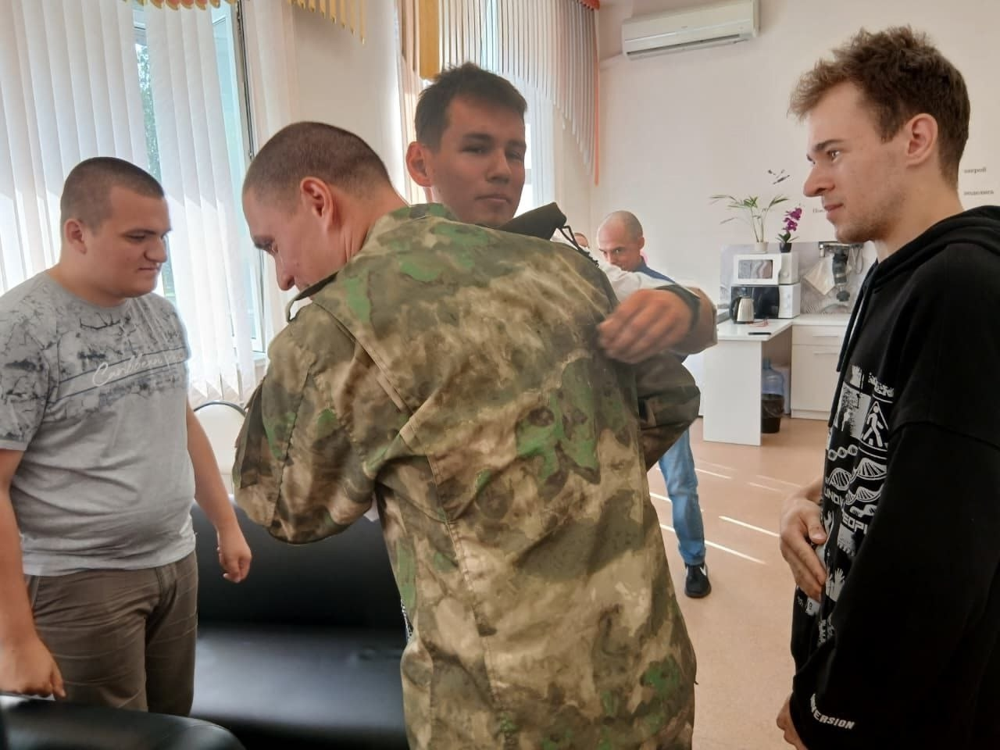
Пример несгибаемой воли: встреча подопечных отделения дневного пребывания с участником СВО. В рамках года защитника Отечества 25 августа 2025 года состоялась значимая встреча подопечных отделения дневного пребывания Набережночелнинского Комплексного центра социального обслуживания населения «Доверие» с участником специальной военной операции, заместителем председателя Ассоциации "Городской совет ветеранов СВО" по городу Набережные Челны и начальником штаба десантно – штурмовой маневренной группы «Барс» Тимуром Эдуардовичем Нусратовым. Гость мероприятия поделился с молодыми людьми историей своей удивительной жизни. Он рассказал о том, как в юности мечтал стать военным, как шел к своей цели и как служба стала делом всей его жизни. Особое внимание было уделено сегодняшнему дню ветерана – его жизни после ранений, стойкости и выдержке. Несмотря на ежедневные боли, Тимур Эдуардович не теряет оптимизма и продолжает активно жить. Своим примером он показал, что даже в самых сложных ситуациях можно найти силы двигаться вперед и не сдаваться. В качестве примера несгибаемой воли гость встречи привел историю Ника Вучича, который, несмотря на физические ограничения, не теряет силу духа и вдохновляет миллионы людей по всему миру. Главный урок, который вынес каждый присутствующий – это ценность внутреннего здоровья и силы духа. Тимур Нусратов подчеркнул, что важно принимать себя и ценить все, что нам дано, а особенно –мир вокруг нас. Его слова стали настоящим уроком мужества и стойкости для всех участников встречи, подарив им веру в собственные силы и вдохновение для новых достижений. Материал предоставлен: КЦСОН "Доверие" г. Набережные Челны.